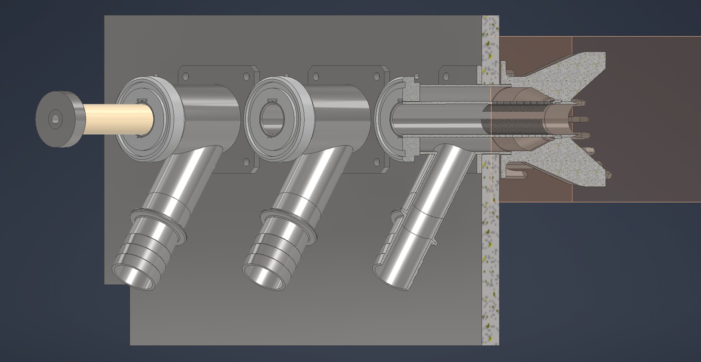

部件 of the 收集 section. Filter tube, plug cutter, and plunger interface (wear, sealing, and CIP cleaning).
简介
The filter tube and plug cutter define the juice filtration path and the core-ejection path. Plungers pass through the filter tube during the cycle to eject the core and scrape pulp from the slot region. This subassembly is sensitive to surface finish, alignment, and sealing; current designs are based on the commercial machine but with increased length and higher industrial load/pressure expectations.
颜色说明与部件
Key components and intent (colours may vary across CAD figures).
颜色
部件
—
Filter tube — hardened steel tube with laser-cut vertical slots (~0.7 mm slot width concept). Longer than commercial version. ID finish target ~Ra 0.8 μm so plungers can slide and seal.
—
Plug cutter — hardened steel replaceable tip that cuts the core; attached separately to the filter tube so the cutting edge can be replaced quickly. Filter tube is not intended to be a frequent replaceable part.
—
Plunger interface — plunger travel inside filter tube with a scraper that clears pulp from the slot region each cycle. Scraper is expected to be 3–4 blades, using a scraper alloy selected to avoid excessive wear on the (hard) tube.
—
Cap / base — removable end cap concept that holds the filter tube (and possibly forms base for plug cutter); cap-to-collector mounting method TBD.
图示
Plungers seated in filter tubes / collector context. Additional collection views: 收集 main gallery.

图 1. Plungers inside filter tubes.
1 / 1
建议补充图示（便于承包商理解）
补充图示: Slot pattern + juice path — section or developed view showing slot geometry vs scraper blades.
补充图示: Plug cutter / plunger stack-up — dimensional chain from central pin through cutter to plunger tip (engaged vs retracted).
补充图示: Seal / leakage zone — highlight plunger–tube interface for contractor seal proposals.
讨论
初步设计与意图
Commercial baseline — Filter tube and plug cutter are based on the commercial machine geometry; industrial version increases length and expects higher loads and higher pressure during extraction.
Finish & sealing — Filter tube ID should be ground/polished (Ra ~0.8 μm concept) so plungers slide smoothly and a seal can be achieved.
Material — Intent is hardened steel for filter tube and plug cutter (vs prior 304) to reduce wear from scraper action.
Geometry targets (plug/cutter + plunger travel)
Plug cutter extension: plug cutter edge should be approximately 9 mm out from the central pin reference face (core-separation geometry).
Plunger tip extension: the plunger tip should extend approximately 15 mm out from the plug cutter (engaged length / pressure chamber volume).
Retract depth: how far plungers retract during the compression step is tunable by adjusting the C-clip position on the plunger drive shafts (contractor to define the adjustment method and range).
已知问题与风险
Leakage — Known issue: juice leaks past plunger-to-tube interface. Seal strategy is still being researched: an O-ring inside the filter tube is a risk because scraper action can cut/wear it during frequent plunger in/out. Contractor should propose a non-O-ring or O-ring-safe sealing approach that survives industrial pressures and washdown.
Wear — Scraper action can roughen tube ID if materials are not chosen correctly; heat treat/finish must be validated.
Alignment — Tube is welded to a cap and then assembled; weld and assembly stack-up can misalign plungers, increasing leakage and wear.
DFM 与制造（中国）
Slotting — Laser cut slot pattern (0.7 mm slot width concept) in hardened steel tube; contractor to propose manufacturing route and inspection.
Heat treat + finishing — Contractor to propose hardening and post-grind/polish methods that keep tube straightness and slot geometry within tolerance.
Assembly — Contractor to propose how to weld cap without distorting tube, and how to control tube axis alignment through assembly.
承包商问题
Propose a non-O-ring or O-ring-safe sealing approach for plunger-to-filter tube suitable for high pressure and washdown (if any O-ring is used, place it so it is not cut/worn by scraper action during repeated in/out).
Recommend material/heat treat/finish for hardened steel filter tube + replaceable hardened plug cutter tip + 3–4 scraper blades (scraper alloy may be selected softer than the tube to reduce tube wear), with expected wear life and service strategy.
Confirm that the plug cutter is a replaceable tip attached to a non-replaceable filter tube (cutting edge is wear item). Propose a hygienic attachment method and retention strategy that avoids exposed threads inside the juice chamber.
Propose an inspection and acceptance plan for the tube (ID finish, straightness, slot quality) and for assembled plunger sealing performance.
接口
Input: Juice exits fruit into filter tube slots; plunger enters tube for core ejection and scraping.
Output: Juice to collector; core ejected through plug cutter to disposal; CIP reverse-flow exits plug cutter centreline.
Mount: Filter tube and plug cutter mount on the collection assembly and interface to core ejection plungers.
接口与公差
已知接口与公差。链接指向相关子系统。
部件
接口 / 公差
相关
Filter tube
Hardened steel; laser-cut slots (~0.7 mm concept); ID finish target ~Ra 0.8 μm concept; straightness/alignment critical
Hardened steel replaceable tip attached to non-replaceable tube; implement target ~9 mm plug-cutter edge extension from the central pin reference face; avoid exposed threads inside the juice chamber
Seals against tube during cycle; target ~15 mm plunger-tip extension out from the plug cutter; retract depth during compression step is tunable (contractor to define via C-clip/drive geometry); scraper clears pulp from slot region each cycle